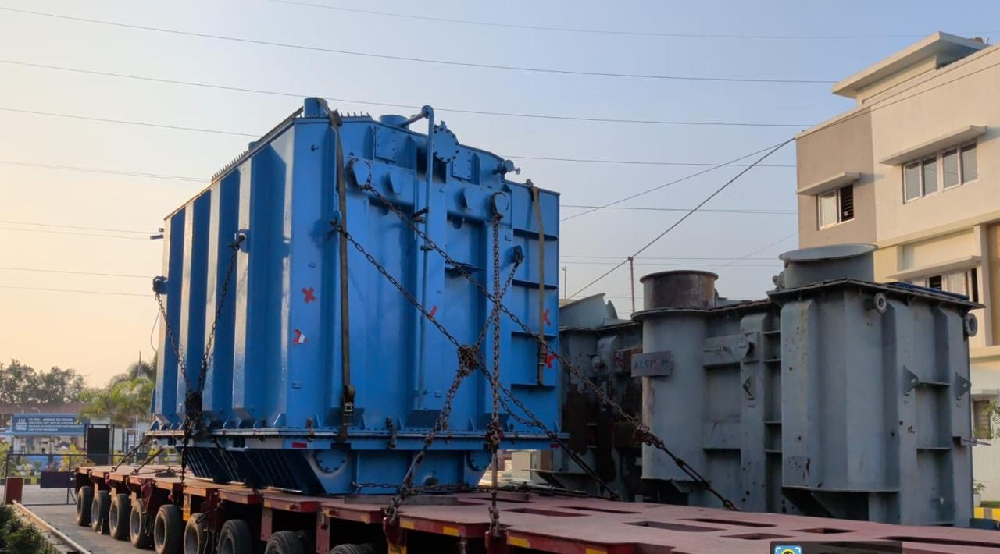
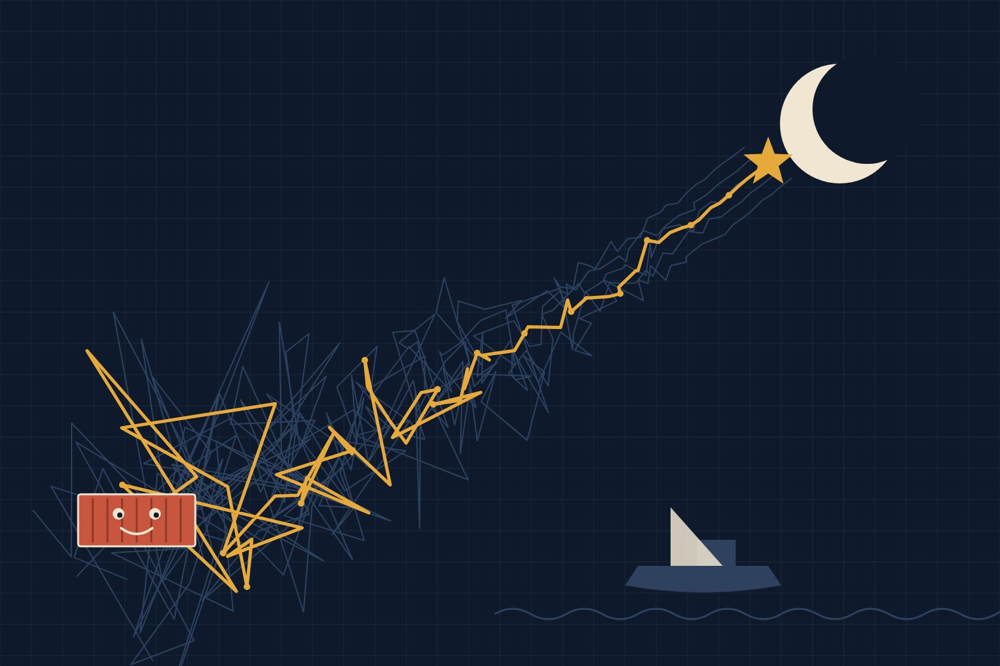
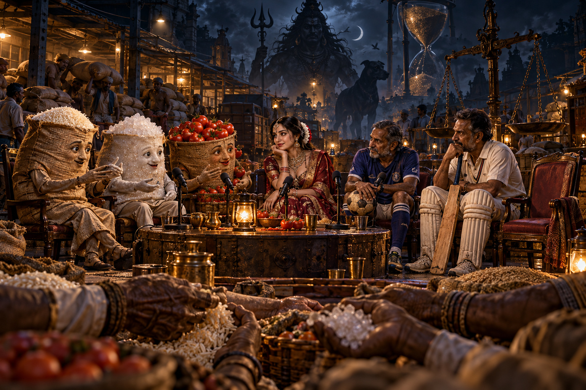
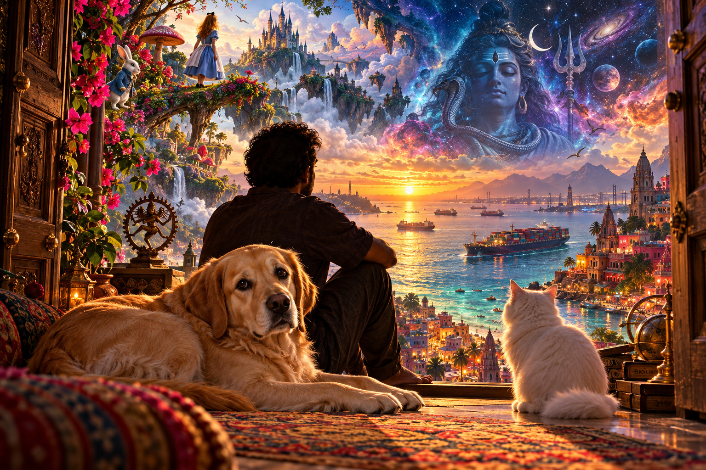

Every earlier main story is kept in the history.

A pencil-sketch study of why tall, heavy cargo wants to fall over, drawn on real transformer photos, with a tipping demo you can push.

Nanda is the cargo, and every need and delivery is a step in a random walk that iteration slowly narrows. Thirteen chapters, one for each C of trade, four mythic interludes, and a pirate navy at the gate.

छह पात्रों का आधी रात का पॉडकास्ट: कीमत, क्षय, गरिमा, श्रम, अनिश्चितता और समय।

A living multimedia archive: Millie, guardian moments, cats, Shiva, Wonderland, cargo and memory. 18 frames, each opens full-size.